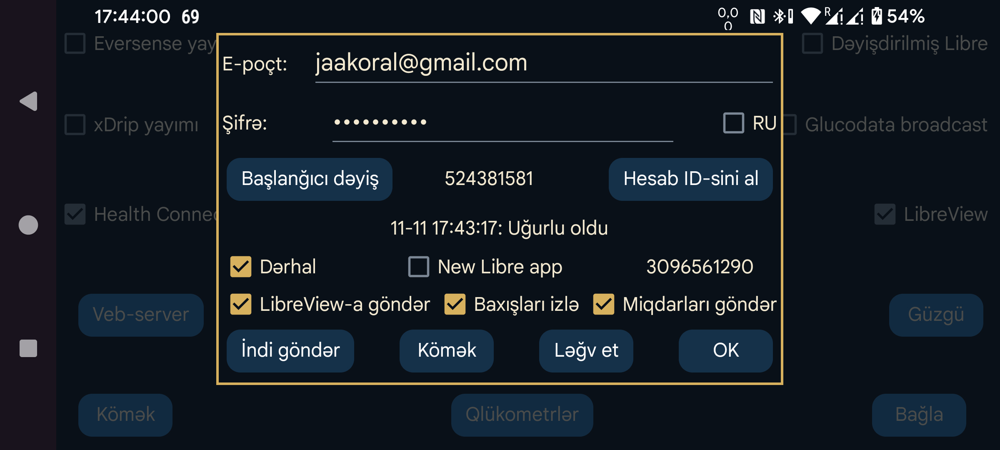

ar az be de es fa fr hi it ja ko nl pl pt ru tr uk uz zh en
Juggluco qlükoza göstəricilərini və Miqdarları LibreView-a göndərə bilər.
LibreLink tətbiqi kimi, o da son 89 günün məlumatlarını LibreView-a göndərir.
Bu xidmətdən istifadə etmək üçün https://libreview.com saytında LibreView hesabı yaradıb e-poçt ünvanını və parolunu burada daxil etməlisiniz. Eyni dövrə aid məlumatları bir neçə mənbədən (məsələn, həm LibreLink-dən, həm də Juggluco-dan) eyni LibreView hesabına göndərməyin. LibreView-da Account Settings → My devices bölməsindən mövcud cihazları silə və ya ayrıca LibreView hesabı yarada bilərsiniz.
Göndərməni aktivləşdirmək üçün LibreView-a göndər seçimini işarələmək də lazımdır.
Juggluco-dan başqa tətbiqə keçdiyiniz hər dəfə, əgər son 20 dəqiqə ərzində göndərmə aparılmayıbsa, yeni məlumatlar LibreView-a göndərilir. İndi göndər düyməsinə basaraq məlumatları əl ilə də göndərə bilərsiniz.
Qlükoza göstəricilərindən başqa Miqdarlar da göndərilə bilər. Bunun üçün Miqdarları göndər seçiminə toxunub hər bir Miqdar etiketinin nəyi ifadə etdiyini göstərin.
RU: libreview.com əvəzinə libreview.ru istifadə edirsinizsə, bu seçimi aktivləşdirin. Yalnız Libre 2 sensorlarına aiddir. Rusiyada Abbott-un Libre 3 tətbiqi olmadığından Libre 3 sensorları yalnız libreview.com ilə istifadə edilə bilər.
Dərhal: Libre 2 və ya Libre 3 sensorundan qlükoza göstəricisi daxil olan kimi onu LibreView-a göndərir. Bu, yalnız LibreLinkUp ilə birlikdə faydalıdır. Bunun üçün Abbott-un Libre tətbiqlərindən birində bu LibreView hesabına LibreLinkUp bağlantısı əlavə etməlisiniz. Ölkənizdə Abbott Libre tətbiqi yoxdursa, dəyişdirilmiş Libre 3 tətbiqindən istifadə edə bilərsiniz.
Bəzən göstərici dərhal görünmür, çünki LibreLinkUp ekranını avtomatik yeniləmir. Diqqətli olun: LibreLinkUp köhnəlmiş göstərici göstərə bilər. Qrafikə toxunduqda cari göstərici əvəzinə əvvəlki göstərici görünə bilər; diqqətlə baxmasanız, onları qarışdırmaq asandır.
Baxışları izlə (Spy Views): aktiv olduqda Juggluco göstəriciyə baxılıb-baxılmadığı barədə məlumatı LibreView-a göndərir. Söndürülübsə, Juggluco həmişə göstəriciyə baxılmadığını bildirir. Bu məlumat yalnız Dərhal seçimi də aktiv olduqda etibarlı şəkildə göndərilir. Libre 3-də bütün baxışların qeydə alınması üçün Juggluco daim internetə qoşulu olmalıdır. Libre 2 isə proses dayandırılmadığı müddətdə bütün baxışları yadda saxlayır.
Başlanğıcı dəyiş: göstərilən tarix və vaxtdan başlayaraq məlumatların yenidən göndərilməsini təmin edir. Yeni LibreView hesabına keçdikdə bu düyməni basmalısınız.
LibreView-a son göndərmə cəhdinin nəticəsi «Hesab ID-sini al» düyməsinin altında göstərilir.
LibreView təhlil üçün sensorun Tarixçə göstəricilərindən, Juggluco isə Statistika ekranında Axın göstəricilərindən istifadə edir. Bu fərq səbəbindən nəticələr bir qədər fərqlənir. Axın göstəriciləri daha kəskin dəyişdiyindən Juggluco adətən daha mənfi nəticə göstərir: hədəf aralığında daha az vaxt, daha böyük dəyişkənlik. «Sensorun aktiv olduğu vaxt» da Juggluco-da az görünür, çünki o, hər çatışmayan Axın göstəricisini nəzərə alır.
Juggluco eyni vaxtda bir neçə sensorla işləyə bilər, LibreLink isə eyni anda yalnız bir sensoru idarə edir. Juggluco da LibreView-a hər dəfə yalnız bir sensordan məlumat göndərir: əvvəl bir sensorun bütün məlumatlarını, sonra həmin sensordan məlumat qalmadıqda növbəti sensorun məlumatlarını göndərir. LibreLink-in bir sensor prinsipi ilə uyğunluq üçün növbəti sensora keçdikdən sonra əvvəlki sensora qayıtmır. Buna görə bir neçə sensor eyni vaxtda işləyərkən daha sonra əlavə edilmiş sensor köhnə sensordan əvvəl dayanarsa, köhnə sensorun məlumatları artıq LibreView-a göndərilməyəcək.
Hesab ID-sini al: LibreView-a məlumat göndərmədən yalnız hesab ID-sini almaq istəyirsinizsə, e-poçt ünvanını və parolu daxil edib «Hesab ID-sini al» düyməsinə basın. Hesab ID-si düymənin solunda görünəcək; bu bir qədər vaxt apara bilər və ekran avtomatik yenilənmir. LibreView serverindən hesab ID-sinin alınması həmin hesabla əvvəllər Abbott-un Libre 3 tətbiqində istifadə olunmuş FreeStyle Libre 3 sensorunu Juggluco-da işlətməyə imkan verir.
LibreView hesabının ID nömrəsini hesabatların ünvan sətrində göstərilən UUID-dən də çevirib Juggluco-ya əl ilə daxil etmək olar.
Yeni Libre tətbiqi: Libre 3 sensorunu aktivləşdirərkən yeni Abbott Libre tətbiqi ilə eyni nömrəni göndərir. Məlumdursa, nömrə bu seçimin sağında, məlum deyilsə, -1 göstərilir. Abbott-un yeni Libre tətbiqi sensorları aktivləşdirərkən Abbott Libre 3 tətbiqindən fərqli nömrə istifadə edir. Əvvəllər Juggluco bu tətbiqlə aktivləşdirilmiş sensorların idarəsini üzərinə götürə bilmirdi; indi bunun mümkün olması gözlənilir.
Sibionics və Dexcom sensorlarının məlumatları LibreView-a göndərilmir.
Məlumatları LibreView formatında fayla yazmaq üçün sol orta menyu → İxrac et funksiyasından və ya Juggluco-nun veb-serverindən də istifadə edə bilərsiniz. Bu ixraca Dexcom və Sibionics sensorlarından alınan qlükoza göstəriciləri də daxildir.